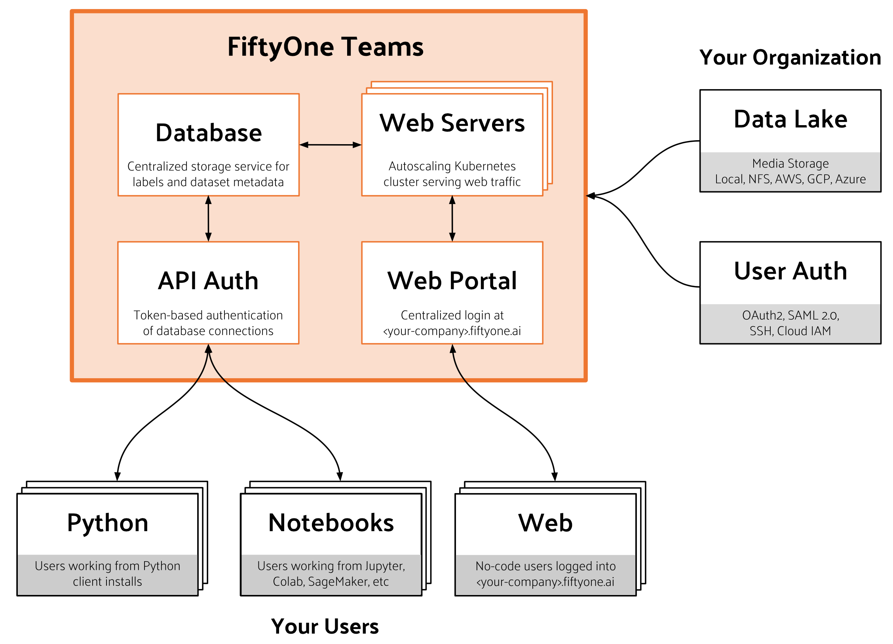

FiftyOne Teams Overview¶
FiftyOne Teams is purpose-built to integrate into your existing ML workflows, including annotation, evaluation, model training, and deployment.
Note
Learn more about FiftyOne Teams and contact us to try it!
FiftyOne vs FiftyOne Teams¶
Here’s a high-level overview of the capabilities that FiftyOne Teams brings:
FiftyOne Teams |
FiftyOne |
|
|---|---|---|
Curate Datasets |
|
|
Evaluate Models |
|
|
Find Mistakes |
|
|
Visualize Embeddings |
|
|
Deployment |
Multi-user, on-premise, |
Local, Single user |
Dataset Management |
|
|
User Permissions |
|
|
Dataset Permissions |
|
|
Dataset Versioning |
|
|
SSO |
|
|
Enterprise Support |
|
Discord Community |
Licensing |
Unlimited data, flexible |
Apache 2.0 |
Backwards compatibility¶
FiftyOne Teams is fully backwards compatible with open-source FiftyOne. This means that all of your pre-existing FiftyOne workflows should be usable without modification.
For example, you can continue running all of the workflows listed below as you would with open source FiftyOne:
Application |
Workflows |
|---|---|
Data ingestion |
|
Data curation |
|
Annotation |
|
Model training and evaluation |
System architecture¶
FiftyOne Teams is implemented as a set of interoperable services, as described in the figure below.
FiftyOne Teams is strictly a software offering. All relevant hardware is owned and managed by your organization, whether on-premises or in your virtual private cloud.
Teams database services
The primary storage location for all of the FiftyOne Teams datasets and related metadata (excluding media files) for your organization.
Teams web service
An always-on front-end from which you can visually access the datasets in your FiftyOne Teams deployment. Web-based access is the standard entrypoint for non-technical users who need point-and-click access to dataset curation and related features, as well as basic workflows for technical users. Most dataset curation and model analysis work by engineers happens via client installations.
Teams API authentication
Technical users connecting to FiftyOne Teams via Python or Jupyter notebooks use token-based authentication to make authorized connections to the centralized database storing your Team’s dataset metadata.
Python/notebook users (your organization)
Similar to FiftyOne, technical users can install the FiftyOne Teams client in their working environment(s). These clients are configured to use the centralized database service and will additionally serve their own App instances (like open source FiftyOne) so that engineers can work locally, remotely, and in Jupyter notebooks.
Web users (your organization)
FiftyOne Teams provides an always-on login portal at
https://<your-org>.fiftyone.ai that users can login to from any browser for
web-only workflows.
Data lake (your organization)
FiftyOne Teams does not require duplication or control over how your source media files are stored. Instead, FiftyOne Teams stores references (e.g., cloud object URLs or network storage paths) to the media in your datasets, thereby minimizing storage costs and providing you the flexibility to provision your object storage as you see fit. FiftyOne Teams has full support for cloud, network, and local media storage.
User authentication (your organization)
FiftyOne Teams can be configured to work with your organization’s authentication and authorization systems, enabling you to manage access to FiftyOne Teams using your existing OAuth stack. FiftyOne Teams supports SAML 2.0 and OAuth 2.0.
Security considerations¶
FiftyOne Teams relies on your organization’s existing security infrastructure. No user accounts are created specifically for FiftyOne Teams; we integrate directly with your OAuth system.
Usage of the FiftyOne Teams client by technical users of your organization is also secure. All database access is managed by the central authentication service, and self-hosted App instances can be configured to only accept connections from known servers (e.g., only localhost connections). In remote client workflows, users are instructed how to configure ssh tunneling to securely access self-hosted App instances.
No outside network access is required to operate FiftyOne Teams. Voxel51 only requests the ability to (a) access the system logs for usage tracking and auditing purposes, and (b) access the system at the customer’s request to provide technical support. We are flexible in the mechanisms used to accomplish these goals.